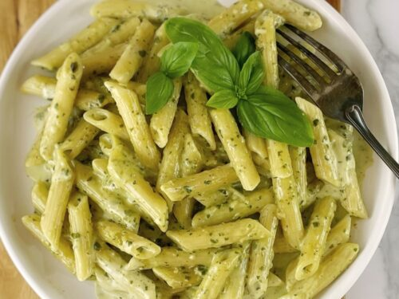

<<< back
Pesto Pasta (crockpot)

Description
Pesto pasta is a classic Italian dish featuring pasta tossed in a vibrant,
uncooked sauce made from blended fresh basil, garlic, pine nuts, Parmesan or
Pecorino cheese, and extra-virgin olive oil. It is known for its bright, herbaceous flavor,
rich nutty aroma, and fast prep time.
Ingredients (5-6 servings)
- 1 box dry pasta
- 1 lb chicken (optional)
- 1 jar pesto
- 1 cup heavy cream
- 1-2 cloves garlic
- Salt, pepper
Steps (15-20 minutes cook-time)
- Mix pesto, heavy cream, garlic, salt and pepper in crockpot.
- Submerge raw chicken into the crockpot sauce. Cover with lid and cook on high for 3 hours.
- After 3 hours, reduce heat to low and remove chicken from crockpot. Shred chicken and then add back to the crockpot.
- Boil the pasta until al dente. Once cooked, drain pasta and add directly into the crockpot. Mix until combined.
- Serve with additional black pepper and parmigiano reggiano cheese.
- Yuhhh!!!!!!!